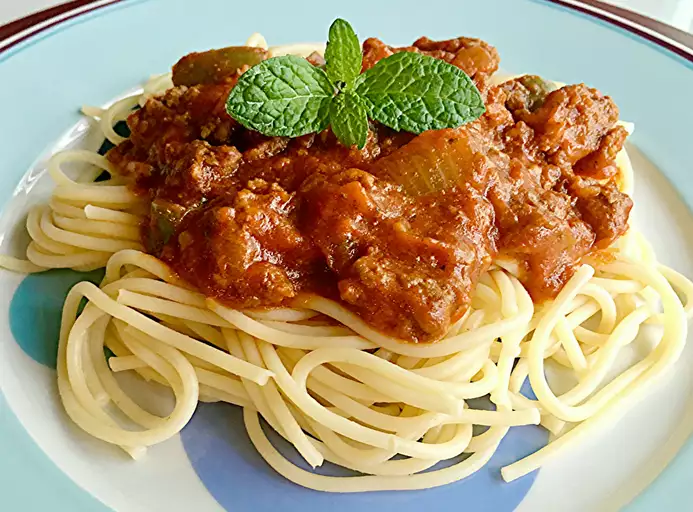

Home
Spaghetti

Description
This recipe will help you create a delicious plate of Spaghetti in easy to do steps. Grab that fork and grated parmesan!
Ingredients
- 1 lb of ground beef
- 2.5 cups of chopped tomatoes
- 6 oz of canned tomato paste
- 4.5 oz of canned sliced mushrooms
- 2 tbsp of dried minced onion
- 1 tsp of salt
- 1 tsp of dried oregano
- 3/4 tsp of white sugar
- 1/4 tsp of ground black pepper
- 1/8 tsp of garlic powder
- 12 oz of spaghetti
Steps
- Heat pan over medium-high heat. Cook ground beef in the hot pan until browned,
occationally stir. Drain grease from cooked meat.
- Place the cooked beef into a pot with tomatoes, tomato paste, mushrooms,
onion, salt, oregano, sugar, pepper, and garlic power and stir. Cover
the pot and let simmer for 2 hours. Occationally stir.
- Bring pot of lighlty salted water to a boil. Cook the spaghetti in the boiling
water until desired texture and stirring occationally. Cook time is about 12
minutes. Plate and serve with meat sauce over the spaghetti.